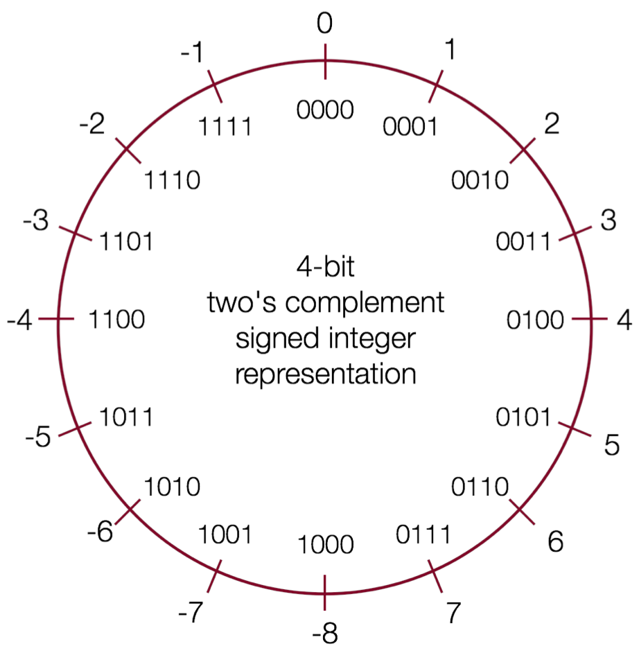

CSE-CS102
计算机系统与编程
不一样的系统课

不一样的系统课
试讲课程已于 2022/12/26 开始，目前主要面向刚学完 CS101 即将毕业找工作的部分同学。
第一期正式课程暂定 2023/5/20 开始，持续报名中……
更多精彩，敬请期待！
《CSE-CS101：编程方法与抽象思维——不一样的编程课》在编程方法与抽象思维上，为你提供了扎实的基础。本课程《CSE-CS102：计算机系统与编程——不一样的系统课》将在此基础上继续提升你的编程技术，在广度和深度上拓展你的编程经验。
本课程参考了斯坦福大学 CS107 课程的教学目标和大纲，从 C 语言开始，逐步深入到底层汇编语言，一步步带你梳理计算机底层的逻辑。当完全理解计算机如何执行程序并操作数据时，你将会成为一名更高效的程序员，特别是在处理调试问题、性能优化、内存管理以及程序健壮性方面。
本课程的目标是让学生掌握
获得以下能力
贯穿整个课程，最终会带你揭开计算机基础架构的奥秘。
学完《CSE-CS101：编程方法与抽象思维——不一样的编程课》或具备以下能力的同学：
作为一名程序员，你也应该具备良好的软件工程能力，能够编写组织良好、可读性强的代码。
课程预计安排 15 次课，大概每 2 次课安排 1 次实验课并发布 1 次作业。每次会留出一周多的时间，供大家巩固知识点并完成对应作业。
本课程主要涉及以下几个主题：
如何使用命令行工具，编写、编译、测试并运行我们的 C 程序？
如何编写风格良好的代码？如何编写全面的测试案例？如何利用 GDB 和 Valgrind 等工具调试并优化我们的程序？

计算机是如何表示数值的？
计算机如何表示并处理像文本这样更复杂的数据？
在我们的程序中，如何高效地管理不同类型的内存？
更多精彩，敬请期待……
考虑到跨平台需求，目前暂定使用飞书会议视频。请提前下载注册，方便后续加入飞书群组。
课程相关答疑，借用 Piazza 答疑平台，方便交流。有任何问题，欢迎发帖求助。
不建议在聊天群提问，一是不方便检索，二是信息无法保留。